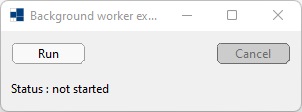
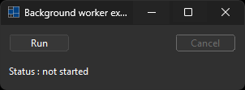
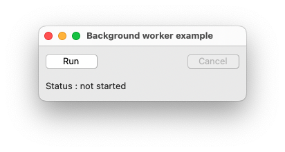
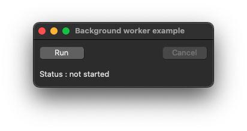
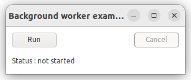
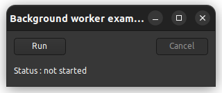

|
xtd
0.2.0
|
background_worker.cpp
demonstrates the use of xtd::forms::background_worker component.
- Windows
- 

- macOS
- 

- Gnome
- 

#include <xtd/forms/application>
#include <xtd/forms/background_worker>
#include <xtd/forms/button>
#include <xtd/forms/form>
#include <xtd/forms/label>
#include <xtd/forms/panel>
#include <xtd/forms/progress_bar>
#include <xtd/forms/text_box>
#include <xtd/threading/thread>
using namespace xtd;
using namespace xtd::forms;
using namespace xtd::threading;
namespace background_worker_example {
public:
form1() {
text("Background worker example");
auto_size(true);
form_closed += [&] {
cancel_button.perform_click();
};
command_panel.parent(*this);
command_panel.size({300, 80});
command_panel.controls().push_back_range({run_button, cancel_button, status});
progress_panel.parent(*this);
progress_panel.top(80);
progress_panel.size({300, 155});
progress_panel.controls().push_back_range({progress, progress_text});
progress_panel.visible(false);
run_button.location({10, 10});
run_button.text("Run");
run_button.click += [&] {
progress_panel.visible(true);
cancel_button.enabled(true);
run_button.enabled(false);
worker.run_worker_async();
if (worker.is_busy())
status.text("Status : running");
};
cancel_button.location({215, 10});
cancel_button.text("Cancel");
cancel_button.enabled(false);
cancel_button.click += [&] {
cancel_button.enabled(false);
worker.cancel_async();
};
status.location({10, 50});
status.auto_size(true);
status.text("Status : not started");
progress.location({10, 10});
progress.width(280);
progress_text.location({10, 45});
progress_text.size({280, 100});
progress_text.multiline(true);
progress_text.read_only(true);
progress_text.word_wrap(false);
worker.worker_supports_cancellation(true);
worker.worker_reports_progress(true);
worker.do_work += [&] {
for (auto step = 1; step <= progress.maximum(); ++step) {
if (worker.cancellation_pending()) break; // stop work...
thread::sleep(100_ms); // simulate work...
}
};
progress.value(e.progress_percentage());
progress_text.append_text(ustring::format("{}{}", std::any_cast<ustring>(e.user_state()), environment::new_line()));
};
progress_panel.visible(false);
run_button.enabled(true);
cancel_button.enabled(false);
progress.value(0);
progress_text.text("");
};
}
private:
panel command_panel;
panel progress_panel;
button run_button;
button cancel_button;
label status;
progress_bar progress;
text_box progress_text;
background_worker worker;
};
}
auto main()->int {
application::run(background_worker_example::form1 {});
}
static xtd::ustring new_line() noexcept
Gets the newline string defined for this environment.
static void run()
Begins running a standard application message loop on the current thread, without a form.
static ustring format(const ustring &fmt, args_t &&... args)
Writes the text representation of the specified arguments list, to string using the specified format ...
Definition: ustring.h:744
xtd::forms::style_sheets::control label
The label data allows you to specify the box of a label control.
Definition: label.h:23
xtd::forms::style_sheets::control button
The buttton data allows you to specify the box of a button control.
Definition: button.h:23
xtd::forms::style_sheets::control form
The form data allows you to specify the box of a form control.
Definition: form.h:21
xtd::forms::style_sheets::control panel
The panel data allows you to specify the box of a panel control.
Definition: panel.h:23
@ text_box
The system-defined color of the accent color (macos specific. On other platform is same as window).
auto_size_mode
Specifies how a control will behave when its auto_size property is enabled.
Definition: auto_size_mode.h:20
@ auto_size
The picture_box is sized equal to the size of the image that it contains.
@ text
The xtd::forms::status_bar_panel displays text in the standard font.
@ grow_and_shrink
The control grows or shrinks to fit its contents. The control cannot be resized manually.
The xtd::forms namespace contains classes for creating Windows-based applications that take full adva...
Definition: about_box.h:13
The xtd::threading namespace provides classes and interfaces that enable multithreaded programming....
Definition: abandoned_mutex_exception.h:10
The xtd namespace contains all fundamental classes to access Hardware, Os, System,...
Definition: system_report.h:17
Generated on Sun Oct 1 2023 07:46:00 for xtd by Gammasoft. All rights reserved.